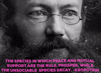
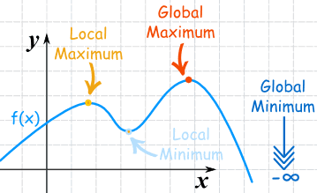

A few pillars that guide how we organise
Our teams are organized around product targets and customer journeys, tangible customer focused missions.
All code is collectively owned it's a shared resource for any project to leverage.
While code is shared, operational responsibility must be clear.
We treat everyone with openness and respect.

Questions and discussion
